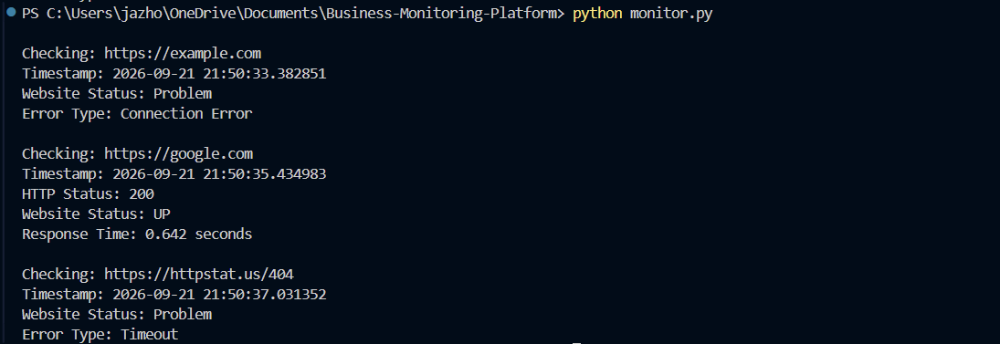

PERSONAL PROJECT · AUG 2026 — PRESENT
Business Operations & Monitoring Platform
Developing a Python-based platform for monitoring business websites and online services. The project began with HTTP availability checks and is being expanded into a broader monitoring platform.
Availability Checks
HTTP Status Codes
Response Time
The current version sends HTTP requests to multiple websites, determines whether a service is reachable, reports HTTP status codes, measures response time, applies request timeouts, and handles network failures.
